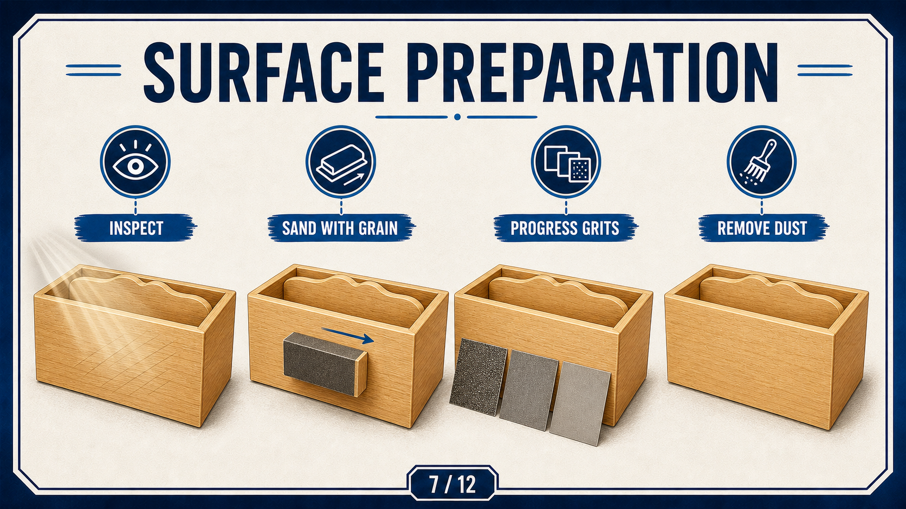
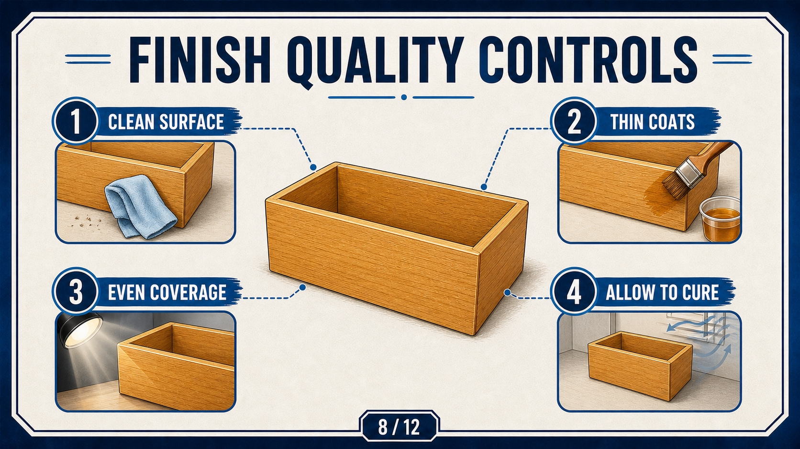
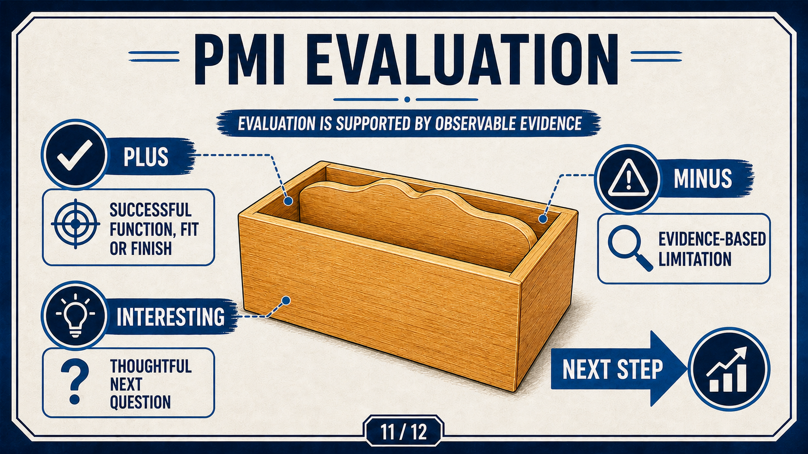

Your work
Student details
Your entries save automatically in this browser. Use Download evidence PDF before leaving the page.
Weeks 5-6
This module
Finish with durable quality: prepared surfaces, controlled finishing, realistic evaluation and a complete student narrative.
Theory 1
Surface readiness and final fitting

The final finish is not cosmetic only; it is a quality judgement about readiness. A rushed surface or untested divider fit often fails through repeated handling and movement.
Use a staged evidence pattern:
- Confirm surface is smooth and clean.
- Check for remaining risks at edges, openings and junctions.
- Record each adjustment before applying final treatments.
- Re-test divider motion and box stability after each major action.
Theory 2
Finish quality and handling controls

Finishing stage actions are part process and part judgement. Product information, school SOP and your own observed outcomes must all be aligned.
- Use approved PPE and control ventilation.
- Record how surfaces changed between checks.
- Do not claim product specifics not supported by the class information.
Theory 3
PMI-based final evaluation

Final evaluation is not a list of compliments. It is a balanced judgment on:
- What worked (Pluses)
- What was limiting (Minuses)
- Interesting follow-up questions and improvements (Interesting)
Write from evidence, not from wishful thinking. If a claim is uncertain, state that clearly and explain what would make it confident.
Guided practice
Weeks 5-6 knowledge checks
Use final-stage checks and reflection language confidently before completion.
Apply your learning
Scaffolded written responses
Write first, then compare your response with the appropriate response example.
Finish the two-week block
Save your evidence
Your work saves in this browser, but browser storage is not the official submission. Download this module PDF before changing devices or clearing browser data.
No marks, answers or personal details are sent from this webpage.